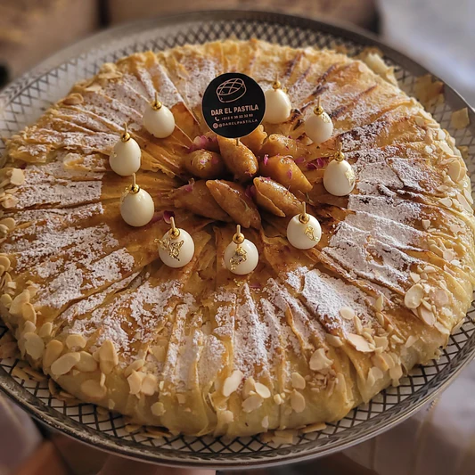
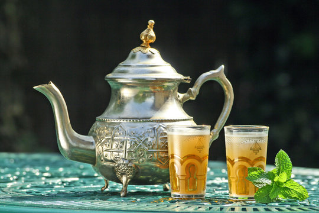
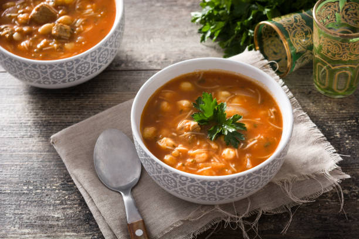
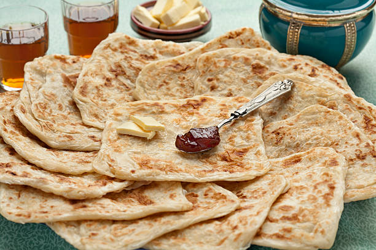
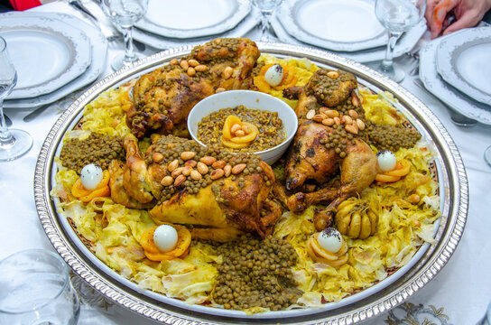
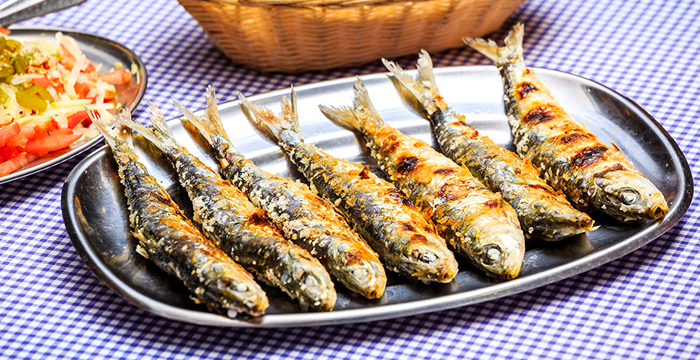
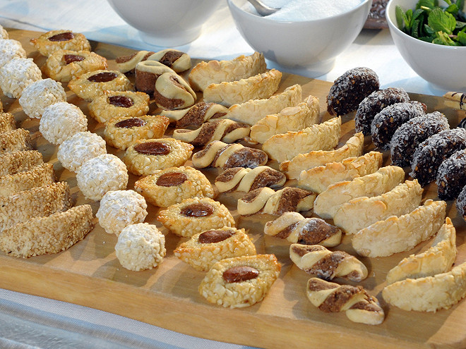

Le Couscous
Traditionnel FamilialLe plat emblématique du vendredi. Semoule fine, légumes variés, viandes et bouillon parfumé.

Le Tajine
Traditionnel PopulaireMijoté lentement dans son plat en terre cuite. Au poulet, bœuf, mouton ou poisson, souvent sucré-salé.

La Pastilla
Sucré-Salé FestifFeuilleté croustillant farci au pigeon (ou poulet) et amandes, saupoudré de sucre glace et de cannelle.

Thé à la menthe
Boisson PopulaireSymbole de l'hospitalité marocaine. Servi très chaud et sucré, il accompagne chaque moment de la journée.

La Harira
TraditionnelSoupe riche à base de tomates, lentilles, pois chiches et viande. Incontournable pendant le mois de Ramadan.

Le Msemen
Petit-déjeunerCrêpes feuilletées carrées, souvent servies avec du miel, du beurre ou de l'amlou au petit-déjeuner.

La Rfissa
Traditionnel FamilialPlat réconfortant à base de fines crêpes découpées, recouvertes de poulet, de lentilles et d'épices (Ras el Hanout).

Poissons du port
FraisSur la côte (Essaouira, Agadir, Safi), les fritures et grillades de poissons fraîchement pêchés sont un délice absolu.

Pâtisseries
SucréCornes de gazelle, chebakia, makrout... Des douceurs à base d'amandes, de miel et d'eau de fleur d'oranger.
Le Zaalouk
Entrée VégétarienDélicieuse salade cuite à base d'aubergines, de tomates, d'ail, d'huile d'olive et de cumin.

Brochettes
Street FoodViande hachée (kefta) ou morceaux de viande marinés et grillés au charbon de bois, servis dans un pain rond.